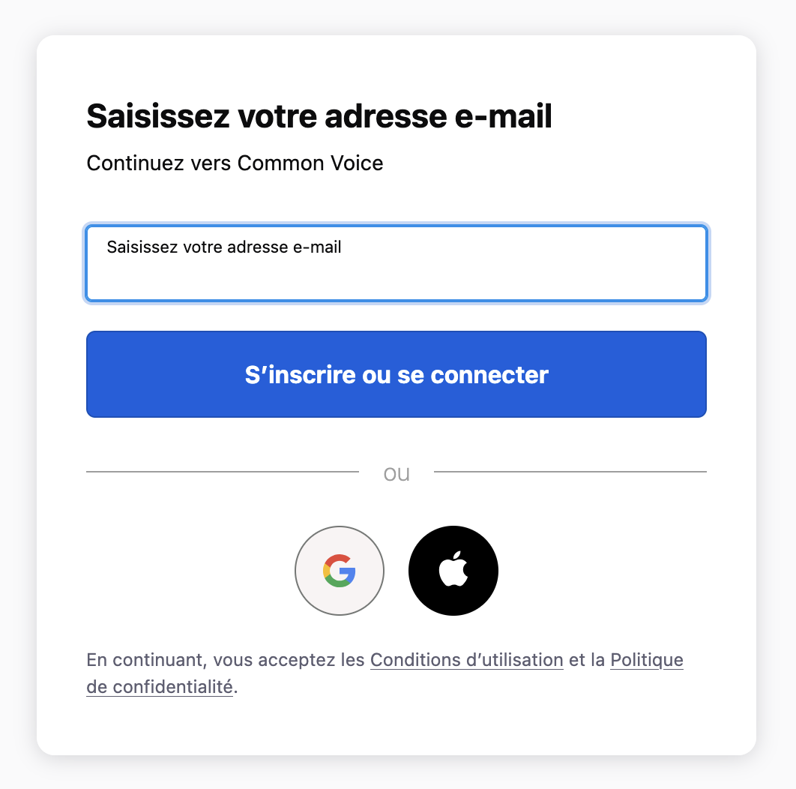
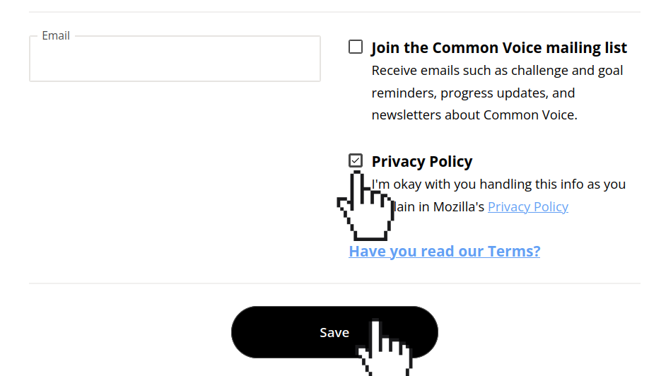
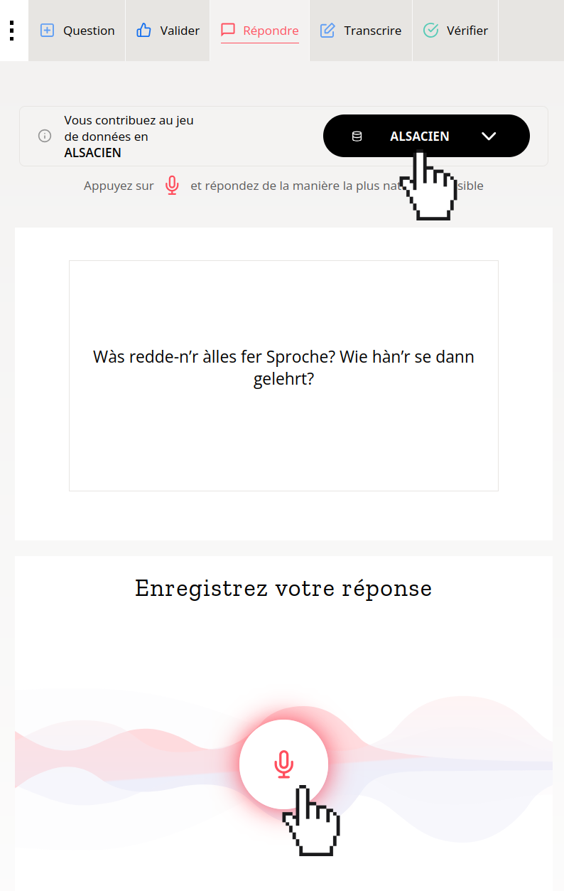
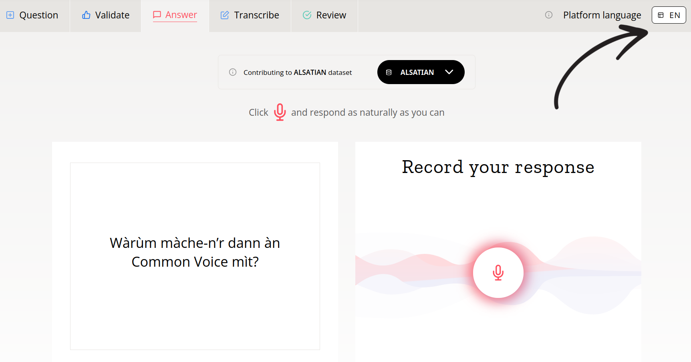
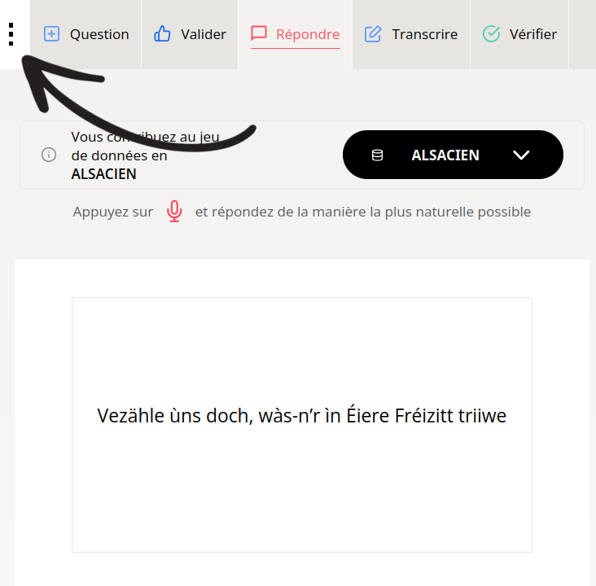

Comment participer en 3 étapes
Créez votre compte Common Voice
Complétez votre profil, acceptez la politique de confidentialité de Common Voice, et validez pour créer votre compte.
Créer mon compte  Accédez à la section "Parole Spontanée"
Assurez-vous d'être connecté.e, puis cliquez ci-dessous pour commencer à enregistrer.
Accéder à Parole SpontanéeEnregistrez votre voix
Choisissez votre langue (Alsacien, Breton, Français, etc.) et répondez à la question qui s'affiche en enregistrant votre réponse.
L'interface est en anglais?
Vous pouvez la changer pour le français, ou pourquoi pas l'alsacien? Tout est traduit!
Sur ordinateur :
Sur mobile :
Bravo ! Vous avez contribué à la diversité linguistique dans le monde numérique.
En savoir plus sur le projet
Les langues de France sont sous-représentées dans le monde numérique et les technologies vocales. Le Défi COLaF, soutenu par la Stratégie Nationale en IA et porté par Inria, a pour but de remédier à cette situation en créant une vaste base de données audio, libre et publique. Cette initiative est essentielle pour la recherche et le développement de technologies du langage.
L'objectif ? Assurer que les langues de France aient une place dans les technologies futures, telles que la reconnaissance vocale, la synthèse de la parole et la traduction automatique.
Ce projet est le fruit d'une collaboration entre la Faculté des langues et le laboratoire LiLPa de l’Université de Strasbourg, Common Voice, Le Voice Lab, la Délégation générale à la langue française et aux langues de France, et le Programme National de Recherche en IA.
Retourner sur le site du défi COLaF